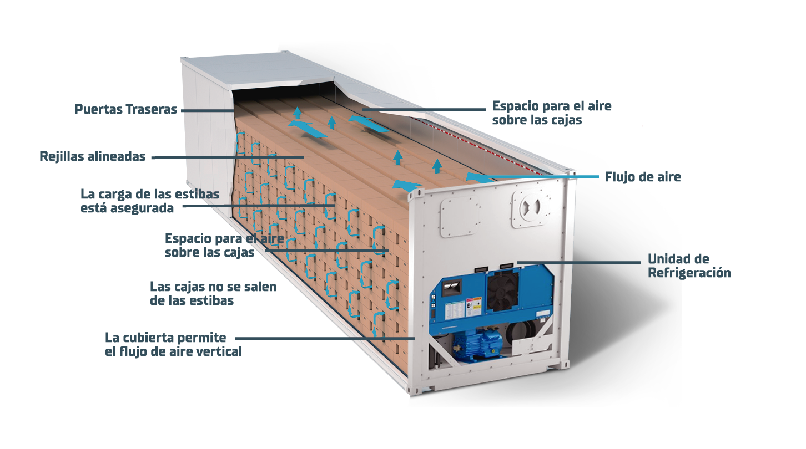

VENTAJAS DE UN REEFER
- Mas economico ue una bodega de frio, cuarto frio y camara frigorificas
- Medio rapido y seguro para el almacenamiento y mantenimiento de productos que necesitan una cadena de frio especial.
- Incrementa de manera instantanea y economica el espacio frio que requiere la empresa.
- Resuelve los problemas ocasionados por picos de demanda o incremento imprevisto en los negocios.
- Evita la contaminación de los productos
- Cuenta con facilidad de traslado, permitiendo rapido posicionamiento en cualquier parte del territorio.

PARTES DE UN REEFER
FLUJO DE AIRE
Los contenedores refrigerados son unidades diseñadas para distribuir aire frio desde el suelo, a travez de una plataforma especifica en forma de T [piso acanalado], que ayuda el flujo uniforme de aire a travez de todo el cargamento
Lo suficiente potente ara asegurar un perfecto intercambio de aire con los bienes almacenados.
TIPOS DE ALMACENAMIENTO
CARGA CONGELADA

Nuestros contenedores refrigerados tienen capacidad de congelamiento y son ideales para almacenar productos que necesitan baja temperatura (hasta -35°C) como helados, carnes y pescados. Preservando de esta manera la cadena de frío y la prolongación del ciclo de vida de los productos.
MULTI TEMPERATURAS
El sistema de multi temperaturas es usado en bienes commodities, como tomates y papas que requieren cambios de temperatura durante su almacenamiento.
TRATAMIENTO DE FRÍO
El tratamiento de frío es un proceso en el que los bienes (por lo general frutas) se mantienen a una temperatura específica y precisa durante un periodo de tiempo determinado. Este tratamiento asegura la eliminación de posibles parásitos como moscas, larvas, sin necesidad de pesticidas o fumigación.